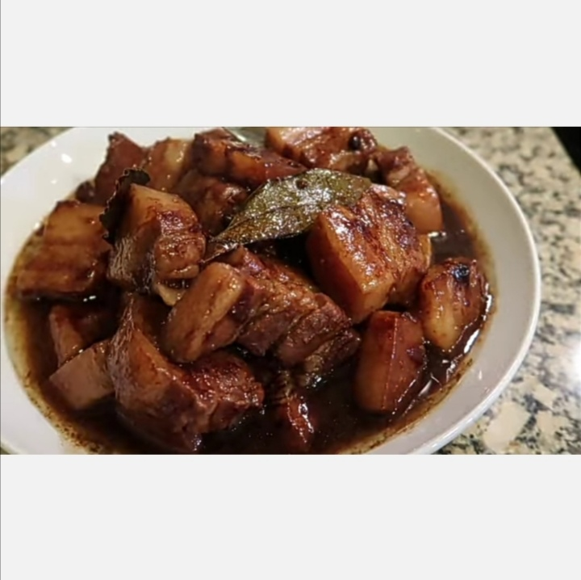

Adobo is a dish composed of pork slices cooked in soy sauce, vinegar, and garlic. There are version wherein onions are also added. Adobo is one of the most famous delicacies in the Philippines. Kindly follow the instructions below so you can make some for yourself or for your loved ones. Enjoy!
Heat the oil in a cooking pot.
Add the garlic. Cook until it starts to turn light brown.
Put the pork belly in the cooking pot. Stir and cook until it turns light brown. Note: check the garlic and make sure that it does not get burnt. Adjust heat if necessary
Add salt and pepper
Add the peppercorns and bay leaves. Continue to cook for 20 seconds so that its flavors get infused in the oil.
Pour the soy sauce.
Let it simmer for 2 minutes.
Add some water and and let it boil until the meat becomes tender.
Pour-in the vinegar. Let the liquid re-boil.
Let it simmer until the sauce thickens.
Transfer to a serving plate. Serve.
Share and enjoy!:)